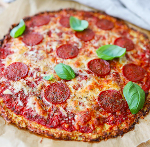

Pure
Greens
Club
Hjem
Madplaner
Opskrifter
Tilbudsavis
Information
Kontakt
Aftensmad
Lækker Blomkålspizza

Blomkålspizza med pizzabund lavet af blomkål
Antal: 2 Personer
Tid: 45 minutter
Ingrediensliste
1 blomkål, fintrevet - evt i foodprocessor
3 æg
1 fed hvidløg, presset
15 mandler, hakket til mandelmel
75 g. parmesan, fintrevet
60 g. frisk mozarella, finthakket
1 tsk. salt
1 spsk. oregano, tørret
Tomatsauce
1 dåse hakkede tomater
1 tsk oregano, tørret
Eksempel på fyld
125 g. frisk mozzarella, skåret i skiver
2 tomat, skåret i skiver
1 håndfuld bredbladet persille, som pynt på de færdige pizzaer